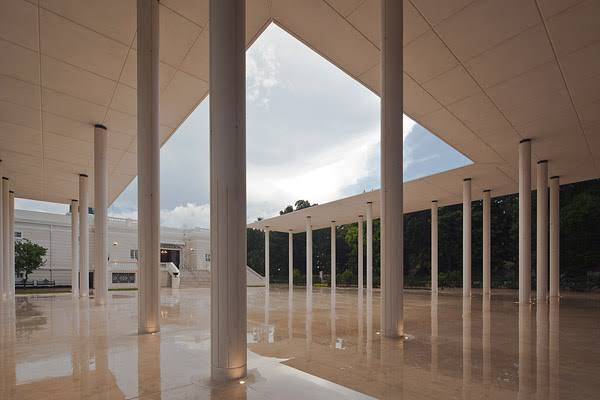

Maintanance and development of CALRECOD
- As the creator of CALRECOD it is my resposibility to keep on developing new functions for further versions of CALRECOD. At this point new functionalities for the optimal design of hollow concrete columns is are being developed as well as for the design of prestressed concrete beams.

Geometrical Non-Linear influence of asymmetrical reinforcement in slender concrete columns in their moment amplification factors
- Asymmetrical reinforcement in concrete columns has demonstrated to be a great practice to reduced envrionmental impacts from the construction of reinforced concrete columns. It is thus vital to keep on developing research related to this design approach for future codes to consider it in their guidelines.